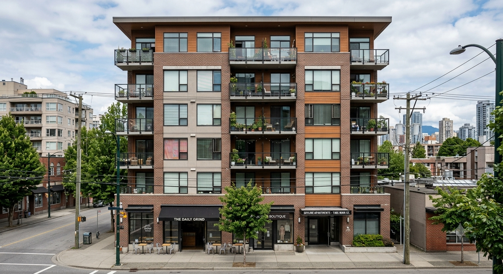

Good design is felt before it's explained.
Try it — this interface starts out the way most unplanned websites end up: cluttered, misaligned, and hiding what matters. See what happens when it's actually designed.
Your Website Can Look Good and Still Be Difficult to Use.
Too Many Choices
Every option competing for attention means none of them win.
Confusing Navigation
Visitors shouldn't have to think about how to find something.
Weak Hierarchy
If everything looks equally important, nothing does.
Poor Mobile Experience
Most visitors are on a phone — the design should start there.
Hidden CTAs
If the next step isn't obvious, most visitors won't look for it.
Difficult Forms
Every extra field is another chance for someone to leave.
Inconsistent Interfaces
When similar things behave differently, trust quietly drops.
This is about how a product works — not just how it looks.
We Don't Start With Colors.
Understand
Understand the user and define the goal.
Structure
Organize the information that needs to exist.
Flow
Design the journey a visitor actually takes.
Interface
Create the visual layer on top of the structure.
Refine
Test what's built and improve it before handoff.
An Interface for Every Part of the Business
Website UX
Navigation, information architecture, user journeys and conversion paths.
Web UI
Layouts, typography, components, visual hierarchy and responsive interfaces.
Mobile Experiences
Phone-first interactions, navigation, touch targets and responsive behavior.
Landing Pages
Clear messaging, hierarchy and conversion-focused layouts.
Dashboards & Portals
Complex information organized into usable interfaces.
Design Systems
Reusable components, patterns and visual consistency.
From First Glance to Taking Action
A visitor lands on the page.
They immediately understand what the business offers.
They find the relevant information without searching for it.
Trust is established and the CTA becomes obvious.
The visitor takes action.
Match Every Listing to Its Category.
Watch it sort itself — that's UX doing the work so visitors don't have to.
Featured Categories

Every listing found its category — that's UX doing its job.
Designed for the Screen Your Customers Actually Use.
Responsive design isn't shrinking desktop content — the navigation, layout, and priorities change with the screen.
Touch targets sized for thumbs. Navigation lives in a bottom bar for one-handed reach. Content stacks in a single column.
Tap a Point to See What's Working.
From Understanding to Handoff.
Discover
Understand the business and its users.
Structure
Organize content and functionality.
Wireframe
Define the experience before visual styling.
Design
Create the polished interface.
Prototype
Connect interactions and flows.
Refine
Test, improve and prepare for development.
Everything Needed to Take a Design to Development
- User-flow planning
- Information architecture
- Wireframes
- Responsive UI design
- Interactive prototypes
- Component design
- Design consistency
- Mobile-first layouts
- Accessibility considerations
- Developer-ready design direction
Design That Looks Good Because It Works Well.
Business Goals First
We design toward outcomes, not decoration.
UX Before Decoration
Structure and flow come before color and style.
Mobile-First Thinking
Designed for the screen most visitors actually use.
Conversion-Aware Layouts
Every layout is built with the next action in mind.
Practical Development Knowledge
We design with what's realistic to build in mind.
Design and Development Under One Roof
We don't just hand you mockups — we build the real thing.
Frequently Asked Questions
UX is how the product works — the structure, flow, and logic. UI is how it looks — the layout, color, and components on top of that structure.
Yes — we can rework an existing interface's structure and design rather than starting from a blank page.
Yes — a single landing page, dashboard, or key screen can be designed on its own without a full site project.
Yes — every design starts mobile-first, covering touch interactions and phone-specific navigation from the outset.
Yes — we can design improvements that fit within a site you already have, rather than requiring a full rebuild.
Yes — interactive prototypes are part of the process, so flows can be tested before any development starts.
Yes — design and development happen under the same roof here, so the design doesn't have to be handed off to a separate team.